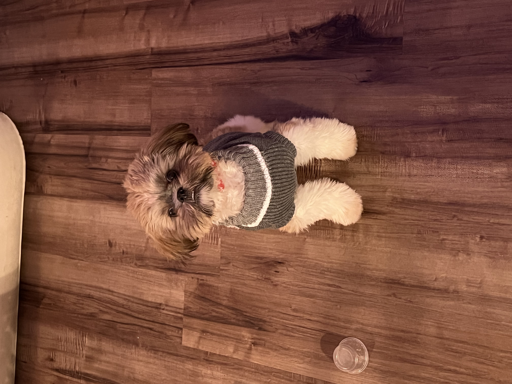
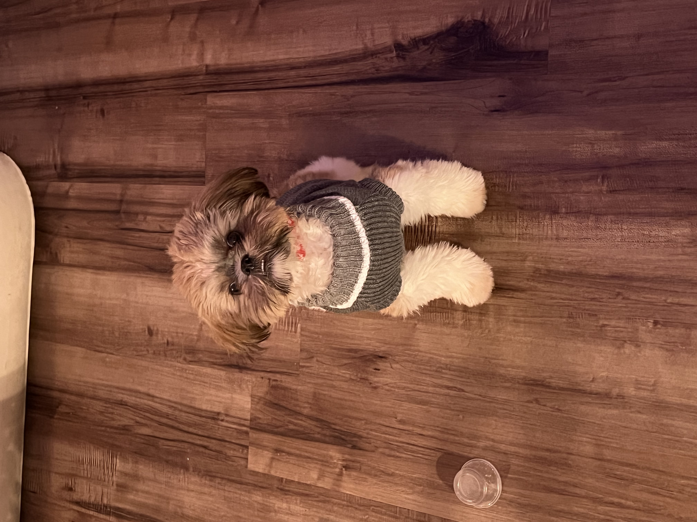
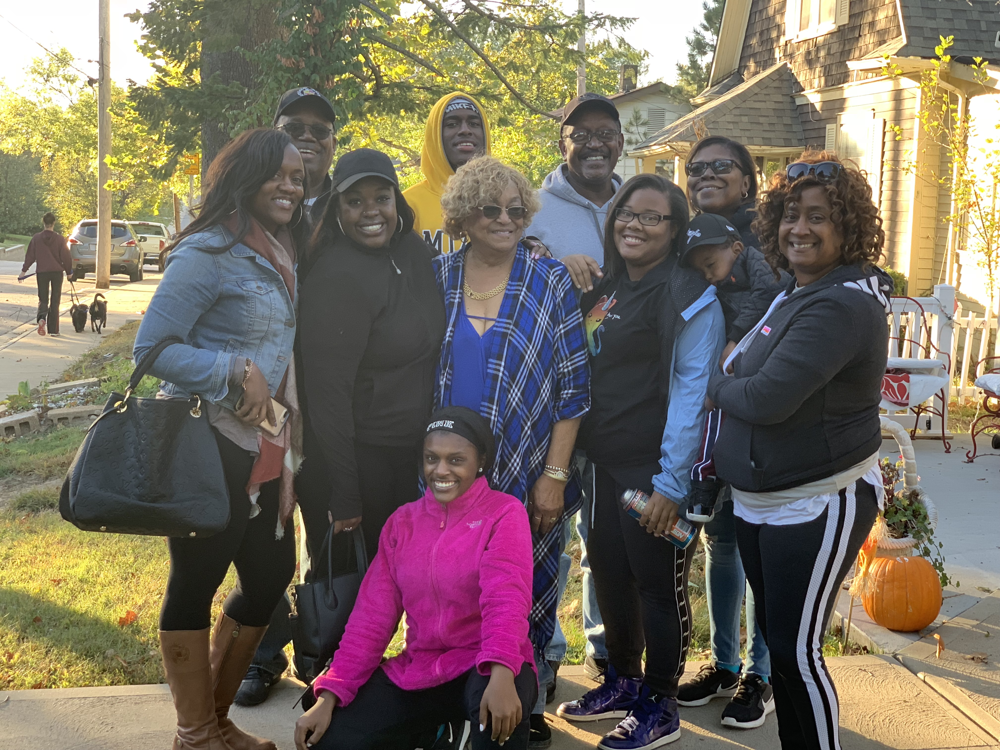
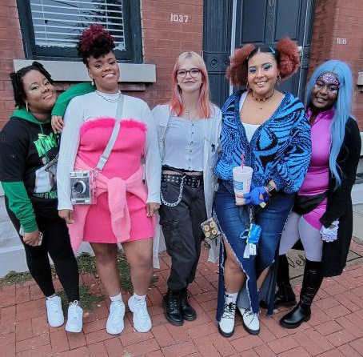
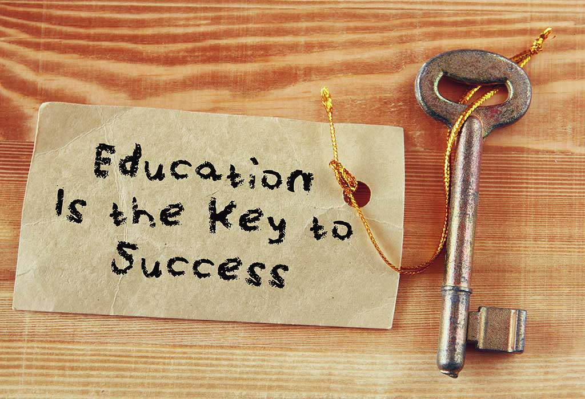

- [Hobby]Play with my fur baby
- [Hobby]Visit with my family
- [Goal] Open a E-commerce clothing line
- [Goal] Open a resturant
- [Hobby]Wild Adventures with my friends
- [Goal] After School Program for under priviledged Kids
Play with my fur baby

 

This is Bentley! He is a pure bred 1 year old shih tzu. Because of his age, and the fact he's the only baby, he requires 23.9 hours of my day. He doesn't always get that time. We like to play tug of war and have debates on how long his daily walks should be. HINT: I always win; it's too cold to walk for 2 hours...
Photo: He finally sat still and let me put his hair in a ponytail; I think I had a treat lol; 2021 X-Mas Pic
Visit with my family!

Meet the Fam! (Not Everyone) We are pretty close, with some normal family issues. I was adopted at birth, but they still make me feel like blood. They support me (sometimes) in my decisions, and when they don't, queue the typical baby boomer vs gen z debate lol! They've made this last year tolerable.
Photo: Oldie but Goldie; After my cousins HS football game 2018
Open an E-Commerce Clothing Line

In 2020, I started a clothing line called Rxse Up Collections© for POC fighting the same fight as me. As years have gone by I've had to put it on pause to rebrand and make it appeal to a bigger audience. I design everything on my own with some input from close friends. In the upcoming years I hope to reopen and thrive with a better message!
Photo: My 2020 photoshoot; shot and modeled by friends.
Open a Resturant


So one of my unlisted hobbies is cooking/baking. My grandma taught me how to cook when I was 5 and when I got older she started showing me her baking recipes and letting me bake on my own. I stuck with it and took some culinary classes in highschool to teach me more in depth. Now I plan to open a resturant in the future highlighting some of my signature dishes. So if you see a new modern resturant pop up in STL in the next 5 years, chances are I met my goal.
Photo: A quick look into my pinterest board
Wild Adventures with my friends

I am the self proclaimed chaotic friend. Some weekends you can see me dragging my friends to some random bar crawl or some random core memory adventure to the middle of no where. We're just a bunch of adults enjoying our youth before actual adulthood hits...
Photo: Halloween Weekend - We were the powerpuff girls and Professor!
Starting an After School Program for Under Priviledged Kids

I want to start a program for kids in STL who cannot afford to learn certain tasks outside of traditional school. Now kids are learning how to code in school, but I want to go further. I want to provide education in automotive mechanics, computer technology, The Arts(Dance, Music, Theater, etc). I would like this program to also double as child care for parents who work late hours and cannot get off work in time.
Photo: A random photo lol